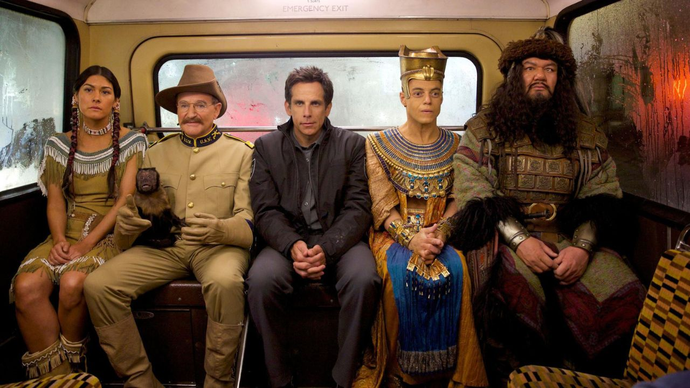

Uma Noite no Museu (2006): Larry Daley aceita um emprego como guarda noturno no Museu Americano de História Natural em Nova York. Ele descobre que uma tábua mágica egípcia faz com que todas as exposições ganhem vida à noite, incluindo Teddy Roosevelt e um esqueleto de Tiranossauro Rex.
Uma Noite no Museu 2: Battle of the Smithsonian (2009): Quando o museu original é reformado, os amigos de Larry são enviados para o arquivo do Instituto Smithsonian em Washington, o maior complexo de museus do mundo. Larry precisa invadir o local para resgatá-los de um faraó cruel que quer usar a tábua para conquistar o mundo.
Uma Noite no Museu 3: O Segredo da Tumba (2014): A magia da tábua egípcia começa a falhar. Larry viaja para o Museu Britânico em Londres para encontrar o pai de Ahkmenrah e salvar seus amigos, garantindo que eles continuem vivos antes que a magia acabe para sempre.

| Nome Do Filme | Ano De Lançamento |
|---|---|
| Uma Noite no Museu | 2006 |
| Uma Noite no Museu 2 | 2009 |
| Uma Noite no Museu 3: O Segredo da Tumba | 2014 |
| Uma Noite no Museu: O Retorno de Kahmunrah. Animação da Disney. | 2022 |
